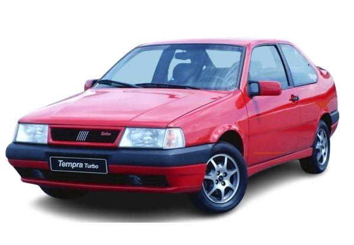

TEMPRA TURBO
Um sedã que desafiou os limites, o Tempra Turbo foi a explosão de engenharia que uniu conforto familiar e performance brutal, redefinindo o que um carro nacional podia ser.

HISTÓRIA
O Fiat Tempra Turbo lançado em 1994 marcou uma virada na indústria automotiva brasileira. Foi o primeiro carro nacional com motor turbo de fábrica, elevando os padrões de desempenho entre os modelos produzidos no país na época.
Baseado no Fiat Tempra europeu, o modelo chegou ao Brasil em 1991, inicialmente com motores aspirados. Mas em 1994, a Fiat surpreendeu ao lançar o Tempra Turbo, um sedã de luxo com alma esportiva, montado na fábrica de Betim (MG) com várias adaptações para o mercado brasileiro.
O lançamento foi ousado, pois o Brasil ainda não tinha tradição em carros turbo saindo de fábrica — esse tipo de tecnologia era comum apenas em preparações paralelas.
O grande destaque do Tempra Turbo era seu motor 2.0 8V com turbocompressor Garrett, capaz de entregar 165 cv e 26,5 kgfm de torque, números impressionantes para a época.
FICHA TECNICA
Modelo: Tempra Turbo
Ano: 1994
Motor: 2.0 8V turbo
Potência: 165 cv
Torque: 26,5 kgfm
0–100 km/h: 8,2 s
Vel. Máx: 220 km/h
Peso: 1.300 kg
Tração: Dianteira
Câmbio: Manual 5 marchas
Dimensões (C×L×A): 4.220×1.620×1.150 mm
CURIOSIDADE
A maior curiosidade e o grande destaque do Fiat Tempra Turbo é que ele foi o primeiro carro nacional de produção em série a oferecer um motor com turbo de fábrica e injeção eletrônica multiponto. Lançado em 1994, o Tempra Turbo utilizava um motor 2.0 8V com turbo Garrett e injeção eletrônica, entregando 165 cavalos de potência e um torque impressionante de 26,5 kgfm. Esses números o colocavam como o carro mais potente fabricado no Brasil por um bom tempo, sendo capaz de acelerar de 0 a 100 km/h em cerca de 8 segundos e atingir velocidades próximas dos 220 km/h.
GALERIA
Imagens do Tempra Turbo
Canal: Carro Chefe